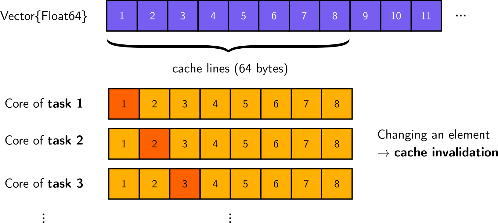

False Sharing
False Sharing is a very common but subtle performance issue that comes up again and again when writing parallel code manually. For this reason, we shall discuss what it is about and how to avoid it.
For simplicity, let's focus on a specific example: parallel summation.
Baseline: sequential summation
To establish a baseline, that we can later compare against, we define some fake data, which we'll sum up, and benchmark Julia's built-in, non-parallel sum function.
using Base.Threads: nthreads
using BenchmarkTools
data = rand(1_000_000 * nthreads());
@btime sum($data); 2.327 ms (0 allocations: 0 bytes)
The problematic parallel implementation
A conceptually simple (and valid) approach to parallelizing the summation is to divide the full computation into parts. Specifically, the idea is to divide the data into chunks, compute the partial sums of these chunks in parallel, and finally sum up the partial results. (Note that we will not concern ourselves with potential minor or catastrophic numerical errors due to potential rearrangements of terms in the summation here.)
A common, manual implementation of this idea might look like this:
using OhMyThreads: @spawn, chunks
function parallel_sum_falsesharing(data; nchunks = nthreads())
psums = zeros(eltype(data), nchunks)
@sync for (c, idcs) in enumerate(chunks(data; n = nchunks))
@spawn begin
for i in idcs
psums[c] += data[i]
end
end
end
return sum(psums)
endparallel_sum_falsesharing (generic function with 1 method)The code is pretty straightforward: We allocate space for the results of the partial sums (psums) and, on nchunks many tasks, add up the data elements of each partial sum in parallel. More importantly, and in this context perhaps surprisingly, the code is also correct in the sense that it produces the desired result.
using Test
@test sum(data) ≈ parallel_sum_falsesharing(data)Test PassedThis is just a reflection of the fact that there is no logical sharing of data - because each parallel tasks modifies a different element of psums - implying the absence of race conditions.
What's the issue then?! Well, the sole purpose of parallelization is to reduce runtime. So let's see how well we're doing in this respect.
nthreads()10@btime parallel_sum_falsesharing($data); 52.919 ms (221 allocations: 18.47 KiB)
A (huge) slowdown?! Clearly, that's the opposite of what we tried to achieve!
The issue: False sharing
Although our parallel summation above is semantically correct, it has a big performance issue: False sharing. To understand false sharing, we have to think a little bit about how computers work. Specifically, we need to realize that processors cache memory in lines (rather than individual elements) and that caches of different processors are kept coherent. When two (or more) different CPU cores operate on independent data elements that fall into the same cache line (i.e. they are part of the same memory address region) the cache coherency mechanism leads to costly synchronization between cores.
In our case, this happens despite the fact that different parallel tasks (on different CPU cores) logically don't care about the rest of the data in the cache line at all.

Given these insights, we can come up with a few workarounds that mitigate the issue. The most prominent is probably padding, where one simply adds sufficiently many unused zeros to psums such that different partial sum counters don't fall into the same cache line. However, let's discuss a more fundamental, more efficient, and more elegant solution.
Task-local parallel summation
The key mistake in parallel_sum_falsesharing above is the non-local modification of (implicitly) shared state (cache lines of psums) very frequently (in the innermost loop). We can simply avoid this by making the code more task-local. To this end, we introduce a task-local accumulator variable, which we use to perform the task-local partial sums. Only at the very end do we communicate the result to the main thread, e.g. by writing it into psums (once!).
function parallel_sum_tasklocal(data; nchunks = nthreads())
psums = zeros(eltype(data), nchunks)
@sync for (c, idcs) in enumerate(chunks(data; n = nchunks))
@spawn begin
local s = zero(eltype(data))
for i in idcs
s += data[i]
end
psums[c] = s
end
end
return sum(psums)
end
@test sum(data) ≈ parallel_sum_tasklocal(data)
@btime parallel_sum_tasklocal($data); 1.120 ms (221 allocations: 18.55 KiB)
Finally, there is a speed up! 🎉
Two comments are in order.
First, we note that the only role that psums plays is as a temporary storage for the results from the parallel tasks to be able to sum them up eventually. We could get rid of it entirely by using a Threads.Atomic instead which would get updated via Threads.atomic_add! from each task directly. However, for our discussion, this is a detail and we won't discuss it further.
Secondly, while keeping the general idea, we can drastically simplify the above code by using map and reusing the built-in (sequential) sum function on each parallel task:
function parallel_sum_map(data; nchunks = nthreads())
ts = map(chunks(data, n = nchunks)) do idcs
@spawn @views sum(data[idcs])
end
return sum(fetch.(ts))
end
@test sum(data) ≈ parallel_sum_map(data)
@btime parallel_sum_map($data); 893.396 μs (64 allocations: 5.72 KiB)
This implementation is conceptually clearer in that there is no explicit modification of shared state, i.e. no pums[c] = s, anywhere at all. We can't run into false sharing if we don't modify shared state 😉.
Note that since we use the built-in sum function, which is highly optimized, we might see better runtimes due to other effects - like SIMD and the absence of bounds checks - compared to the simple for-loop accumulation in parallel_sum_tasklocal above.
Parallel summation with OhMyThreads
Finally, all of the above is abstracted away for you if you simply use treduce to implement the parallel summation. It also only takes a single line and function call.
using OhMyThreads: treduce
@test sum(data) ≈ treduce(+, data; ntasks = nthreads())
@btime treduce($+, $data; ntasks = $nthreads()); 899.097 μs (68 allocations: 5.92 KiB)
This page was generated using Literate.jl.